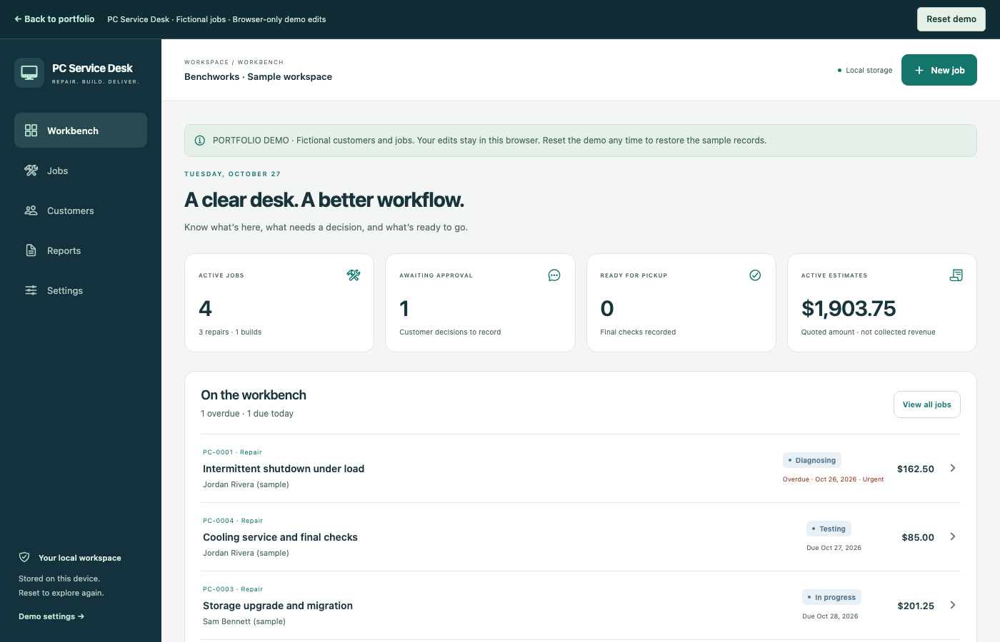

OPEN DEMOREPAIR · BUILD · DELIVER
PC Service Desk
A complete workbench for PC repairs and custom builds, from the intake brief to the final service report.
The idea
Customer details, diagnostic notes, parts, quotes, and approval decisions need a shared record to keep service work moving.
The implementation
Connect customers and devices to jobs, validate quote approval and final checks, track component budgets, and export readable reports.
- Repair & build workflows
- Itemized quotes & approval
- Diagnostics & service reports
Interactive demo with fictional jobs. Edits stay in your browser; personal backup import is disabled.
Try PC Service Desk